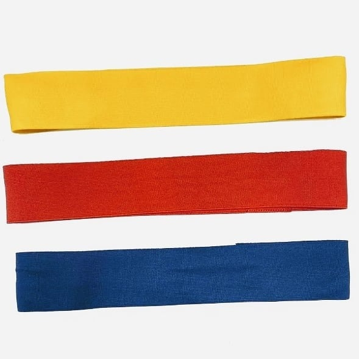
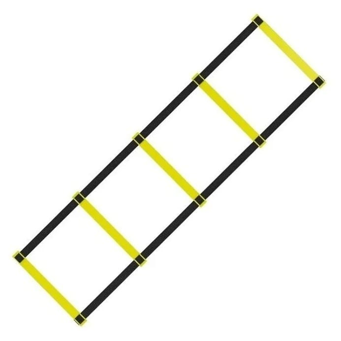
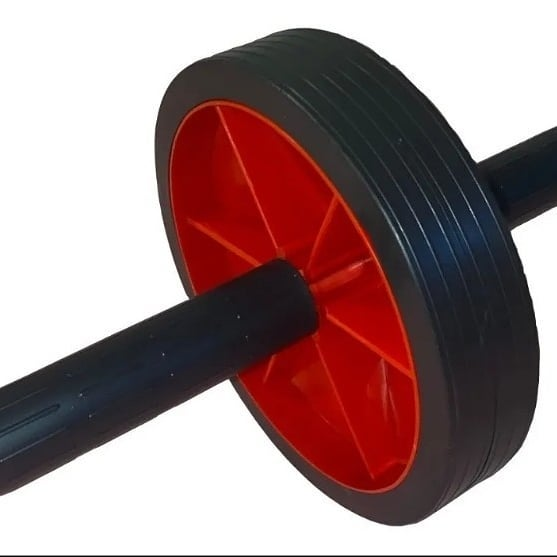
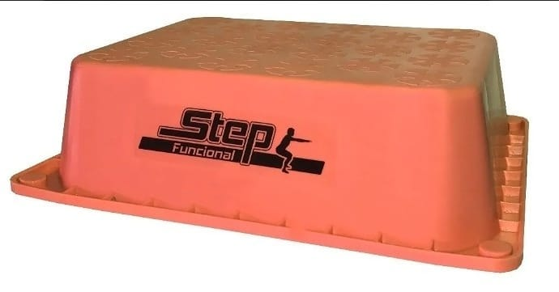

ARTICULOS
Colchonetas: Distintos colores, para Yoga, Ejercitacion o Pilates
Conos: Por mayor o por menor

Bandas elasticas:De distintos colores y resistencia

Escalera de coordinacion: de 5 o 10 escalones

Rueda abdominal: De distintos tama�os y colores

Step funcional: Step plastico de distintos colores: Medidas de Base: 44 x 34 cm - Medidas tarima de apoyo: 36 x 26 cm